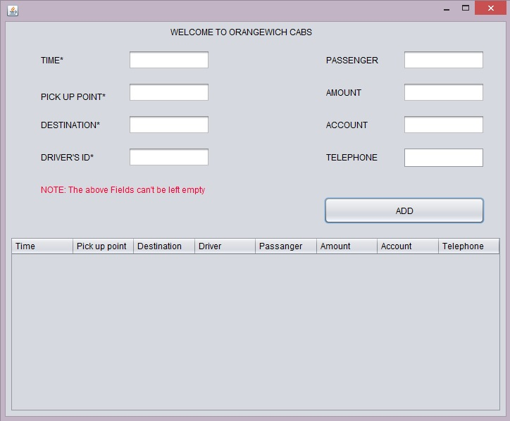

Freelancing
Researcher, technical writter, network designerWorked with number of clients on small project that includes research, analysis and development.
Role
- Develop android application
- Design database structure
- Write research IEEE papers
- Technical writting in cloud computing, research analysis, networking, programming, network security, cryptography
- Developing web applications
- Data mining
- SPSS
- R-Programming
- Salesforce

“Desktop application for car rental service.”

“Android application for online food order which is delivered by cab drivers.”
“A COMPUTER AIDED CARDIAC DISEASE DIAGNOSIS SYSTEM USING IOT AND IMAGE PROCESSING ”
1. ORIGIN OF THE PROPOSAL
Most of the people are suffering from heart disease which is estimated to be 1,500,000 deaths in one country every year. The health care is asked by the patients in the home as most of them have a risk of traveling. At the last stage of the disease, the patients feel sick and it’s too late for them. It is found that most of the patients are dead before getting treatment. The healthcare performance has to be improved to prevent cardiac disease deaths. The use of modern technology will be effective in the diagnosis of cardiac disease in patients. When visited by patients, the doctors take the ECHO of their heart and they determine if any disease could be present. ECHO signals are considered to be the most valuable data for cardiac disease conditions. It uses an advanced testing process which involves echoing frequency of the sound wave. The visual image of hearing is produced. The monitoring of ECHO can be done automatically by using sensors where the data are collected and transmitted to a cloud system on the server. On the server, the knowledge-based algorithm uses a huge amount of dataset sample of ECHO and compare it with them. By comparing to those data, the system comes to know if there is any problem in the heart or not. The analyzed result is sent back to the patient and diagnosis is complete. The aim of this paper is to develop such a system using the Internet of Things (IoT) and Image processing which aids cardiac disease diagnosis. The real-time data is to be collected and passed to the server through the internet of things (Moeen, 2015). The data on the server is processed using an image processing algorithm and the result is sent back to the patient. There is a number of purposed systems which uses internet of things but not with image processing. This proposal describes research and development in the second section. The third section contains a work plan and methodology used in developing a proposed system (H Liu, 1999). The detailed process and development are included in this later sections.
2. REVIEW OF STATUS OF RESEARCH AND DEVELOPMENT IN THE SUBJECT
The number of chronic disease in elderly people is growing rapidly and with the traditional approach, there is not much success in saving lives these days. The healthcare service is provided in different parts of the city which is far to reach for most of the patients. There is a big queue for the checkup and most of the doctors could miss diagnosing or make mistake in diagnosis. On emergency condition, the demand for healthcare is essential. The diagnosis of cardiac disease could be done using IOTs and image processing technique. Uniyal presented healthcare application that aims to provide health care for elderly people which is everywhere. The division of pervasive healthcare can be done in a number of aspects that is incidence detection algorithm, real-time monitoring, patients’ self-management and emergency intervention. All these uses number technologies and technique for implementation and helping patients to diagnose cardiac disease. The monitoring system represents huge research topics. (H Liu, 1999) There have been a number of development in projects and prototype of those research papers. The proposed project by Rofouei and Bsoul mainly focuses on issues with sleeping. The system for monitoring peoples’ brain was proposed by Lin et al. using bioelectrical activities.
2.1 INTERNATIONAL STATUS
The neural network has been used for classification of ECHO signals with a large number of units. There is a relationship between each unit of the neural network. Patel and Joshi have proposed this approach in 2013 for getting ECHO signals. The more advanced approach is proposed by hemophilia and booming (Boonjing, 2011) which uses arrhythmias. The use of production data is done in this methodology. The physician is required for diagnosis in this proposed system. The wireless body area network has been adopted in healthcare systems these days. The measurement of body temperature, pressure, the activity of blood and ECHO which gives complete detail about the heart like its shape and size, internet structure and visual image. The visual data can be accessed by medical professionals and analyze. This network uses IOT based system. The proposed system by Hasssanalieragh and moeen (Moeen, 2015) describes the IOT’s use in healthcare. Lavanya et al. developed a rule-based fuzzy logic system for a cancer patient. The dataset is provided and the logic refers to the symptoms. Chao Li and Xiangpie proposed a system for heart disease monitoring using IOT for pervasive healthcare service. The internet of things gets all the data from the patients and sent it to the doctors at healthcare. The diagnosis is done by the doctor and the report is sent back to the patients.
2.2 NATIONAL STATUS
Soni. (J. Soni, 2011) Discussed IoT based data contain a number of information with has poor knowledge in diagnosis and finding results. The extracted data is huge in volume but needs to process well. She purposed that there is lack of analysis tools for such huge information in health sector collected by IoT. The measured ECHO signal image is passed to the server for further diagnosis using the internet of things from patients (Lin, 2014). The data and image of ECHO are then processed using Image processing technique and compared with a number of analysis tools. The heart disease diagnosis system proposed gives an actual prediction and complete diagnosis result. The ECHO, when taken using the internet of things, gives noise as given in the proposed paper by Tran.
2.3 IMPORTANCE OF THE PROPOSED PROJECT IN THE CONTEXT OF CURRENT STATUS
The proposed project gives a completely automatic system for cardiac disease diagnosis without any use of human effort. Recently, a compilation was held in China against the world’s top physician and artificial intelligence for disease diagnosis. It was found that AI was much effective in the diagnosis of cancer compared to a human. The proposed system can independently provide complete information about the patient and his/her heart condition. The IOTs collects the data from the patient and it is passed to the server where image processing algorithm is used for comparing it with a number of datasets which is already fed into the system. The proposed system has great importance in mankind which doesn’t require patients to travel and get a checkup by a physician for diagnosis of cardiac disease (H Liu, 1999). Most of the elderly people have cardiac problem commonly which requires them to travel resulting high blood pressure and investment of huge money on health and traveling. In this proposal, we will complete the gap by introducing image processing technique instead of human (doctor). There are a huge set of data for a cardiac disease which is used for processing at the other end.
3. WORK PLAN
Objective- To propose an IOTs sensor to capture heart rate and ECHO of person.
- To effectively use data processing algorithms by the sensor and send the data to the cloud server.
- To use image processing algorithms at the server with data obtained data.
- To provide the analyzed result to person back on the real-time environment
3.1 METHODOLOGY
ECHO is a graphic representation of the heart and its movement that is electronic in nature which is more advanced testing when compared to ECG. The ECHO uses the ultrasonic sound of heart and the virtual image is produced. The image of the heart’s chambers, valves, walls and the blood vessel are visible. For the production of ultrasonic sounds probe named a transducer is passed over the chest. The transducer produces sound waves that bounce off your heart and “echo” back to the transducer. These waves are then changed to pictures that are viewed on a video monitor. For an adult cardiac imaging, the waves in the range of 4–7 MHz are used. We use sensors to get their data. The images formed by ECHO are of 3 types which are measured by sensors.
3.1.1 TWO-DIMENSIONAL IMAGING SENSORS
2D image views the structures to be moving in real time in a cross-section of the heart. This sensor is called Tricuspid valve TV which is placed on chest of patient. The sensor that is being used is accelerometer LIS331DLHM which is used as core component. This image is used to detect abnormal anatomy or the abnormal movement of structures. The obtained image is passed to the server using a sensor and Its (YS, 2013). The common cross-sectional views are I. Parasternal long axis II. The parasternal short axis III. The apical view
3.1.1.1 M-MODE IMAGING
This particular mode gives a 1D view that is used for fine measurements. In M-MODE imaging, temporal and spatial resolutions are comparatively higher as the focus is on only one of the lines from the 2D trace. The sensor used processes the data and sends to the server.
3.1.1.2 DOPPLER IMAGING
Continuous-wave Doppler
This type of Doppler is very sensitive because it measures the velocity along the entire length of the ultrasound beam. Its image is used to know the severity of valve stenosis or regurgitation. This image is collected by sensors in the patient’s body (YS, 2013). The image is gone through filtering technique to remove noise in it.
Pulsed-wave Doppler
PW Doppler is for localized velocity measurements of turbulent flow which is used to assess ventricular in-flow patterns and to make accurate measurements of blood flow at the valve orifices (America, 2011.). Color-flow mapping CFM measures both the velocity and direction of blood flow. When the flow is towards the transducer the color displayed is red, flow away from the transducer is displayed by blue, and higher velocities are shown by the lighter shades (Boonjing, 2011).
3.2 SYSTEM ARCHITECTURE
The architecture of the proposed project is divided into three layers. The sensor layer is present in the person and it is responsible to collect data from the patients (Marco, 2012). The other important layer is the transport layer which defines the transportation of collected data to the cloud server. The last one is an application layer which is also divided into two phases i.e. database and another one is an image processing system. The architecture of the proposed system is given below:
3.2.1 SENSOR LAYER
The manual process is Transesophageal echocardiography (TEE) which is generally called “surface echocardiography,” is generally carried out under mild sedation with midazolam. This process is much of a manual to obtain the image of the heart where a very thin probe is passed down the esophagus of the patient until it is leveled with the heart for clear views. Above process is manual where proposed system is automated. This sensor is called Tricuspid valve TV which is placed on chest of patient. The sensor that is being used is accelerometer LIS331DLHM which is used as core componen.. After the image is obtained it is communicated through the transport layer and to the server. The sensor used on the patient collects the data and is transferred through wireless communication using IOTs. The data image taken from is transferred to IoTs. It gives useful posterior cardiac structures (Moeen, 2015). The key indications for TEE are: • The absence of vegetation’s on transthoracic echo and high suspicion indicates high infective endocarditis. • To rule out an embolic source • Acute dissection • Mitral valve disease preoperatively
3.3.1 SERVER AND IMAGE PROCESSING
The data is stored in a database which is maintained by the server. These data are processed using a cuckoo algorithm which is for image processing (AK, 1989). The data is stored in the database are given an id for the particular user and the result can only be accessed after authentication and authorization for that particular user. The algorithm being used is one of the latest algorithms for image processing technique. It is of the effective optimized method used and introduced by Xin-she and Squash Beb. The algorithm is purely based on the life system of the cuckoo and it is inspired by it. There are altogether 3 rules for this algorithm which states that only one egg is laid by one cuckoo and it dumps the egg in the randomly chosen nest. The next generation is carried out by the high quality of egg-containing nest. There is a fixed amount of host nest. The host bird determines the egg of cuckoo with probability (R, 2011)c. The table gives the worse nest and the calculation is given. No. Name Number 1 Population of Cuckoo 20 2 Least number of eggs 5 3 The highest number of eggs 10 4 Cuckoo alive 100 5 Variance of population 10-15 The signal is processed through this algorithm and diagnosis is done. The result is determined using angiogram after the proposed system gives the result. The cuckoo algorithm gives improved images with clear observation capability to determine if the person has heart disease or not (Earls JP, 2014).
4. CONCLUSION
The proposed project uses internet of things which gets data using senor from the person. The data is transferred to a remote server where the processing of data is carried out. The result is sent back to the person as well as stored in a database for further diagnosis and record. When the sensor collects all the data from the heart, it is filtered using the FIR algorithm. The noise is reduced and data is sent. The cuckoo algorithm is being used for diagnosis of image processing (H Liu, 1999). The report describes the complete methodology and algorithm used for developing a system for cardiac disease.
5. REFERENCES
AK, J., 1989. Fundamentals of digital image processing. Prentice-Hall. America, U. —. v. R. S. o. N., 2011.. http://www.radiologyinfo.org/en/info.cfm?PG=vascularus. [Online] [Accessed 18 5 2016]. Boonjing, A. K. a. V., 2011. Heart disease classification using neural network and feature selection. s.l., IEEE, p. 406–409. Earls JP, W. P. A. S. A. S. A. P., 2014. ACR appropriateness criteria asymptomatic patient at risk for coronary artery disease. J am Coll Radiol, pp. 12-19. H Liu, J. X. F. L. Y. S. Y. F., 1999. Optical processing architechture and its potential application for digital and analog radiography.. Med Phys, pp. 648-652. J. Soni, U. A. D. S. a. S. S., 2011. Predictive data mining for medical diagnosis. An overview of heart disease prediction, pp. 43-48. Lin, C., 2014. Wireless and wearable EEG system for evaluating driver vigilance. IEEE Transactions on Biomedical Circuits and Systems, pp. 165-176. Marco, B. a., 2012. Enabling the iot paradigm in e-health solutions through the virtus middleware. s.l., IEEE 11th International Conference on Trust, Security and Privacy in Computing and Communications. Moeen, H. a., 2015. Health monitoring and management using internet-of-things (iot) sensing with cloud-based processing. s.l., IEEE. R, R., 2011. Cuckoo Optimization Algorithm. Applied Soft Computing. W.Y. Lin, M. Y. L. a. W. C. C., 2014 Conference on Consumer Electronics (ICCE). The design and development of a wearable posture monitoring vest. Las Vegas, s.n. YS, C., 2013. Echocardiographic evaluation of coronary artery disease. Coronary Artery Disease, pp. 24-613.